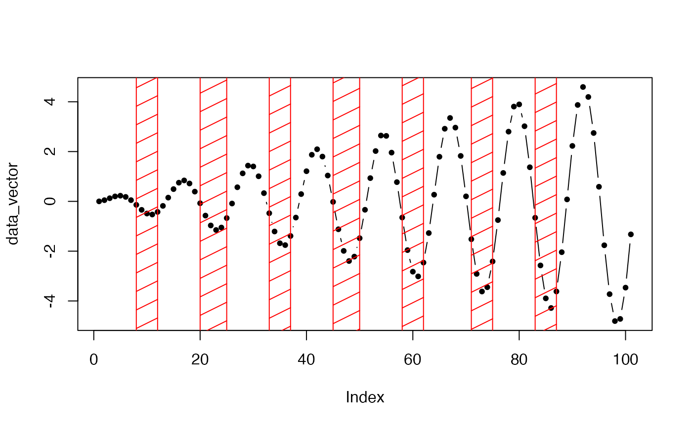
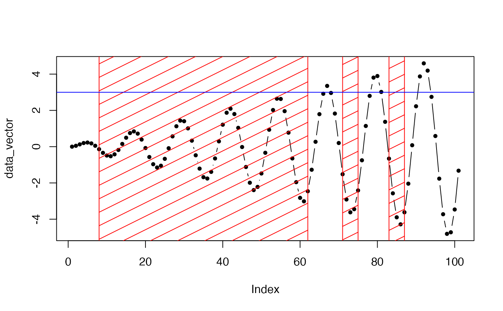

Counts the Number of intervals where x number of data points in a row are below a predifined threshold value. Events are separated by a specified number of data points above that threshod value. Furthermore, the exceedance of a value can also seperation critirion.
count_def_events(
data_vector,
starting_data_points,
threshold,
separating_data_points,
use_recovery_value = FALSE,
recovery_value = NULL,
return_event_positions = FALSE
)Numeric vector (with data in the same unit as the tjreshold)
Minimal number of data points to define the beginning of an deficiency event
Numeric in the same unit as the data vector
Minimal number of data points to seperate two events
If TRUE a recovery, two events are only separated if a revocvery value is exceeded between two deficits
Numeric in the same unit as the data vector. Only used if use_recovery_value = TRUE.
Instead the number of events, the events starting and endpositions are returned, correspoding to the data vector
Either a number of events or a data frame with event start and end position
data_vector <- sin(x = seq(0,50,0.5)) * 1:101/20
a <- count_def_events(
data_vector = data_vector,
starting_data_points = 2,
threshold = 0,
separating_data_points = 4,
use_recovery_value = FALSE,
recovery_value = 7,
return_event_positions = TRUE)
plot(data_vector, pch = 20, type = "b")
rect(xleft = a$tBeg, xright = a$tEnd, ybottom = -10, ytop = 10,
col = "red", density = 4)

recovery_value <- 3
a <- count_def_events(
data_vector = data_vector,
starting_data_points = 2,
threshold = 0,
separating_data_points = 4,
use_recovery_value = TRUE,
recovery_value = recovery_value,
return_event_positions = TRUE)
plot(data_vector, pch = 20, type = "b")
rect(xleft = a$tBeg[a$start],
xright = a$tEnd[a$end],
ybottom = -10, ytop = 10,
col = "red", density = 4)
abline(h = recovery_value, col = "blue")
